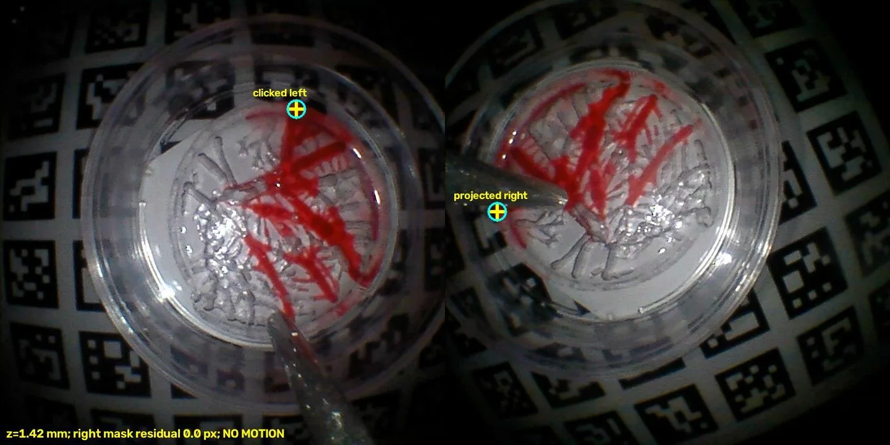
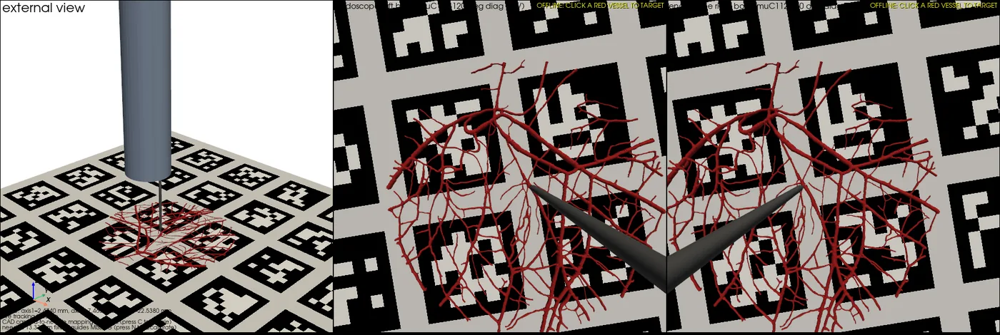
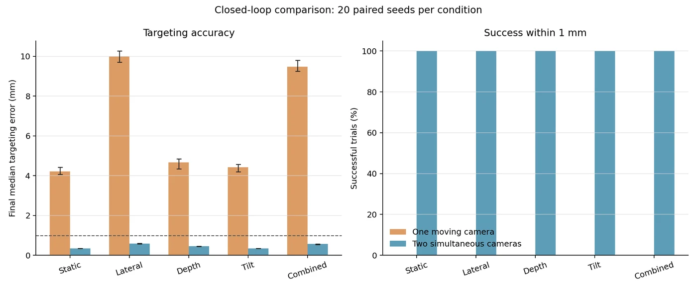

Master's thesis · Surgical Robotics Lab, University of Twente · May 2026 – present
Stereo-endoscopic vessel targeting
For my MSc in Biorobotics I'm building a millimetre-scale probe that finds a blood vessel through two tiny cameras and steers a needle to it. The long-term goal is an instrument that enters through a small opening and delivers microrobots inside a vessel. My thesis settles one design question on the way: is a second camera worth the probe diameter it costs?
- Ø8 mm probe carrying two micro-endoscopes, a working channel and a needle
- ±0.345 mm task tolerance: a 30G needle tip inside a 1 mm vessel
- 20/20 vs 0/20 simulated closed-loop runs ending within 1 mm of the target, two cameras vs one

The question
Every millimetre of probe diameter spent on a second endoscope is taken away from patient access. Today's prototype fits both cameras into 8 mm around a 4 mm working channel. The final instrument needs a 5.1 mm channel for a two-photon imaging probe, and then one camera still fits in 8 mm while a useful two-camera layout needs 10 mm.
One camera can still measure depth, by moving between frames and triangulating across time. That works until the target moves during the sweep. Two cameras measure depth in a single instant. The thesis compares the two on matched targeting trials and reports both the perception error and where the needle actually ends up. Success is defined physically: the needle tip has to land inside the vessel, which leaves ±0.345 mm.
What I built
Over four months I built the probe, the phantoms, the vision software and the motor control myself.
The probe
An SLA-printed 8 mm shell holds two 2 mm micro-endoscopes 5.32 mm apart, a 4 mm working channel and a 1 mm needle channel. The layout comes from an optimiser that maximises the thinnest wall rather than from a sketch, and the distance between the cameras is whatever survives it. Two guides hold the needle straight, to within 0.1 mm over 30 mm.
The rig and the phantoms
Three motorised linear stages move the probe as one rigid body. I drive them directly over Thorlabs' low-level APT protocol, with soft limits and guarded moves. An AprilTag grid on the table makes every camera pose metric. The test targets are PDMS phantoms made by soft lithography: vessel networks cast from real chick-embryo (CAM) vasculature and filled with dye. They are repeatable, and their geometry is known independently of the cameras.
The vision chain
Both endoscopes are calibrated as a stereo pair. Vessels are detected live in both views (by colour, for now). A target clicked in one view is transferred into the other and checked there, and the guarded approach re-acquires the target at checkpoints on the way down instead of trusting a stale map.
A digital twin
I simulated the whole chain (probe, stages, both endoscope views and the phantom) so the camera comparison could run before the bench was ready. It replays the same waypoints as the 14 August bench run.

Results so far
In the digital twin
Over more than 1,000 paired simulated runs, two simultaneous cameras located the target with a median error of about 0.06 mm in every condition. One moving camera ranged from about 1 mm on a static target to 7 mm when the target moved sideways by half a millimetre.
| Target motion | One moving camera | Two cameras |
|---|---|---|
| Static | 0.98 mm | 0.064 mm |
| Sideways, 0.5 mm | 7.03 mm | 0.064 mm |
| Depth, 0.5 mm | 1.64 mm | 0.063 mm |
| Tilt, 2° | 1.56 mm | 0.064 mm |
| Combined (0.5 mm + 2°) | 6.40 mm | 0.064 mm |
Median localisation error, 30 paired runs per condition. Two cameras were better in every single pair.
In closed loop, with the same simple controller for both, two cameras brought the tool within 1 mm of the target in 20 of 20 runs in every condition and settled in about 2 seconds. One camera made it in none.

The catch: one camera is not simply worse
The one-camera runs above used a short, 0.2-second window of frames. Give a single camera a longer 5 mm sweep over a static target and it beats the stereo pair (0.026 vs 0.065 mm), because stage travel buys about three times more viewpoint separation than the probe can carry. The price is time: that sweep takes around 2 seconds, and anything that moves in the meantime corrupts the estimate. The pair wins because it measures depth in one instant, so its own timing matters too: 100 ms of skew between the two captures raised its error from 0.06 to 0.38 mm. This rank reversal is what the physical trials are designed to test.
On the bench
On 14 August the chain closed on real hardware for the first time: live vessel detection in both endoscopes, a click transferred between the cameras, and a gated, guarded approach to the vessel plane.
How I work: AI agents on real hardware
I develop the software together with AI coding agents (Claude Code and Codex) working from one shared handover file. It holds the hard rules: agents may edit code, read logs and run static checks, but they never run project scripts themselves, so nothing an agent does can move a stage or open a camera; every axis has soft limits; and every experiment ships with a launcher and a README a stranger can follow. It also records the hardware quirks that cost hours to find, such as the Ethernet hub that rewrites one byte in the controllers' replies, so any position above 24.655 mm reads back 5.69 mm low.
What's next
Matched physical trials: the same targets run with one camera and with two, on stationary and moving phantoms, with the needle-tip error measured by something other than the cameras under test. I'm writing this up as a conference paper alongside the thesis, which I plan to complete in early 2027.
Results marked as simulated come from a controlled digital twin with a rigid planar phantom and known camera poses. The physical comparison is still in progress.
Supervised by Juan Huaroto Sevilla and Prof. Sarthak Misra.